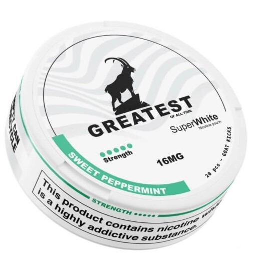
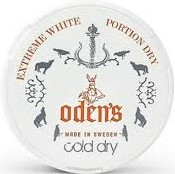
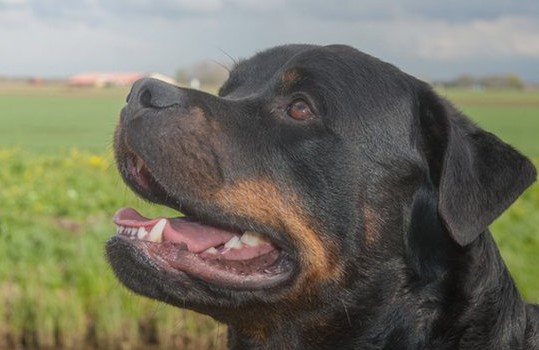

Monttukerho on monttumiesten yhteinen vertaistukiryhmä, jonka yksi tärkeä tehtävä on luoda turvallinen ympäristö jakaa ja pummia nikotiinipusseja. Tältä sivulta löydät paljon hyödyllistä ja ajankohtaista tietoa monttumiehistä ja niiden parkituspaikoista.
Monttukerho on nykyään tärkeä ja korvaamaton osa mohlojen porukkaa. Monttukerhon jäsenistä puhutaan monttumiehinä. Käsite monttumies on alunperin tullut porukan jäsenistä, joiden alaleuka on niin painava, että heillä on erittäin usein suu auki. Monttu on suun synonyymi. Monttukerhon nimi on erittäin mielipiteitä jakava ja jotkut ovat kritisoineet sitä jopa loukkaavana monttumiehiä kohtaan, mutta useiden mielestä se on erittäin sopiva nimi.
